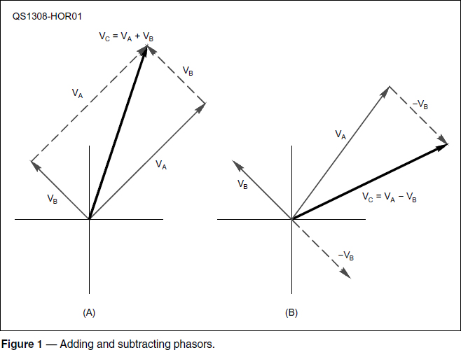
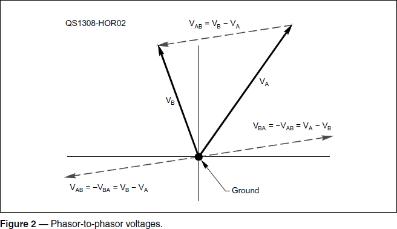
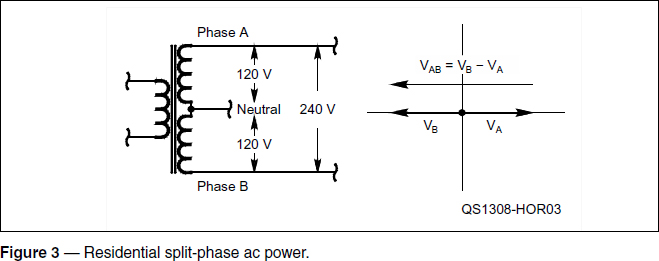
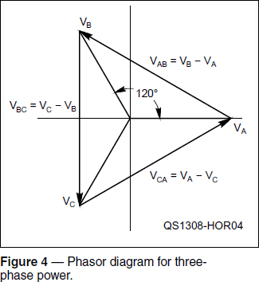

Experiment #126 — Phasors, Part 1
Last month, we introduced the phasor — a way of representing a sinusoid in terms of its amplitude and some value of phase compared to a reference. Phasor notation looks like V∠ φ where V is the amplitude and φ is the phase. Let’s learn a few more things about phasors.
Basic Phasor Math
One of the nice things about phasors is that multiplying them is pretty easy. Multiplying phasor A by phasor B requires you to multiply the magnitudes and add the angles:
VA∠φA × VB∠φB = VAVB∠( φA + φB)
Similarly, to divide phasors, divide the magnitudes and subtract one angle from the other.
VA∠φA ÷ VB∠φB = (VA / VB )∠(φA - φB)
Remember that to use phasor notation this way requires both signals to have exactly the same frequency so that φA and φB are constant. If that isn’t true, the math gets a lot fancier.
How about adding phasors? Not quite as easy. Because we are operating in polar notation, you must break down each phasor into its X axis and Y axis components, add those components together and then change them back to phasors:
VC∠φC = VA∠φA + VB∠φB
X axis component = [VA cos φA + VB cos φB]
Y axis component = [VA sin φA + VB sin φB]
VC∠φC = X + j Y = √(X2 + Y2) ∠ (tan-1 Y/X)
Bleh!
Fortunately, scientific calculators and software usually have routines to do this math automatically — look in the manual or Help file under polar notation. (Remember that online tutorials for this kind of math are listed on the ARRL website.1)
Graphically Adding and Subtracting
We have been drawing all of the phasors with their head at the origin and their tail (where the arrowhead is) at the point representing the magnitude and angle. Phasors can be drawn anywhere on the X-Y plane, though, as long as they have the same magnitude and angle! This makes adding them together graphically very simple, as shown in Figure 1A, by arranging the phasors “head to tail.” The resulting phasor is drawn from the head of the first phasor to the tail of the last phasor.

Just like ordinary numbers, you can add phasors together in any order. What about subtraction? Turn the phasor to be subtracted 180° and add as in Figure 1B — just like subtracting an ordinary number by multiplying it by -1 and adding instead. Now you know how to add, subtract, multiply, and divide phasors all having a common frequency.
Let’s learn another neat trick — if the phasors represent voltages, how do you find the difference in voltage between two phasors? When you measure voltage at a point in a circuit, you measure voltage “from” ground “to” the point. In effect you are measuring the voltage at the point and then subtracting the voltage at your ground reference, which is zero. If our phasor ground reference is at the origin as in Figure 2, the tail of the phasor (with the arrowhead) shows the voltage measurement with respect to ground.

When you measure voltage between two ungrounded points in a circuit, your meter’s negative probe is the reference and you measure voltage “from” the reference point “to” the point where the positive probe is. Figure 2 shows how this works if the two voltages are phasors and our reference “ground” point is at the origin. The voltage “from” phasor A “to” phasor B is itself a phasor, written VAB and calculated as VB – VA. We could also measure the voltage from phasor B to phasor A as VBA = VA – VB. You can see that VBA has exactly the same magnitude but the opposite angle to VAB. Take a minute and sketch out the subtraction of the phasors to make sure you see how I came up with VAB and VBA.
Phasor-to-Phasor Voltages
This is all fine and dandy, but does it have any practical value? Would you ever encounter phasor-to-phasor voltages? Yes and closer to home than you imagined. Residential ac power electrical service supplies two phases to the main breaker box, each 120 V. The power comes from a transformer at the utility pole with a single primary winding and two secondary windings. Figure 3 shows the secondary windings each supplying one phase of your electrical service and connected together at one end as the neutral. The polarity of the windings is opposite so that the phasors representing their voltages point in opposite directions as shown in the phasor diagram. This is called split-phase power.

If you have two equal-and-opposite phasors, what is the magnitude of the voltage between them? (Answer: The sum of the phasor magnitudes.) If each phasor has a magnitude of 120 V, the magnitude of the voltage between them is 120 + 120 = 240 V. If you connect one hot wire to each phase and one to neutral, that’s where the ac for your amplifier (or your clothes dryer) comes from!
Three-phase Power
Now let’s take this one step further — three-phase power.2 The ac coming from generating facilities like dams and power plants has three phases. That’s why there are three wires (or pairs of wires) making up the high-voltage lines (not counting any protective ground wires). Large power consumers would unbalance the power grid if they used power from just one of the phases, so they are wired to use some power from each of the phases and the electricians are in charge of configuring things so each phase is loaded by about the same amount. That is why buildings and businesses of any size have ac service with three phases, not just two.
The phasors representing each of the three phases — A, B, and C — are shown in Figure 4. They are all spaced equally around the circle, 1⁄3 of the circumference or 120° apart. Let’s say your apartment in a big building is supplied with two phases of power, just like residential split-phase ac power, and each phasor has an amplitude of 120 V. What happens when you try to run the drier by connecting it to the two phases (let’s say phase A and B)? Why don’t you get 240 V?

Look at Figure 4 and the phasor VBA. The two phasors representing the phases of electrical service, VA and VB, are not pointing in opposite directions — they are only 120° apart — so their magnitudes don’t add as in the split-phase situation. In fact, if you look up the trigonometry, the magnitude of phasor VBA = √3 VA = 1.732 VA, not 2 VA. If each phase is supplying 120 V, what voltage will your dryer see if it is connected across two phases? (120 × 1.732 = 208 V)
This dependence on how your electrical service is derived from the utility grid makes a big difference when running a heavy load — such as an amplifier. If your amplifier is designed to run from 240 V power and you connect it to 224 V instead, that is about 7% low. It’s common for amplifiers not to supply their full rated output power when run at slightly lower input voltage. The opposite case — higher than expected input voltage — can stress high-voltage components, too.
If your equipment does not have a “universal” power rating of something like 90 to 260 V ac, determine how to configure it for the voltage you have available. Many appliances and amplifiers have selectable input voltage “taps” or connections on the primary winding of a power transformer that can accommodate 240, 220 or 208 V power. (Where does 208 come from? Two hundred and eight is approximately 1.732 × 120 V, the usual voltage for home ac service.)
I said we’d have a two-part article, but it will take one more to get to some real radio meat-and-potatoes: AM and PM modulation from the perspective of phasors. That, in turn will usher you to the gates of modern data communication: I-Q modulation.
Notes
1www.arrl.org/studying-for-the-general-license, click on “Math Tutorials,” then “Tutorials on Math for License Exams.”
2A thorough treatment of three-phase power in both Y and delta connections is available online at www.ece.msstate.edu/~donohoe/ece3414three_phase_power.pdf.